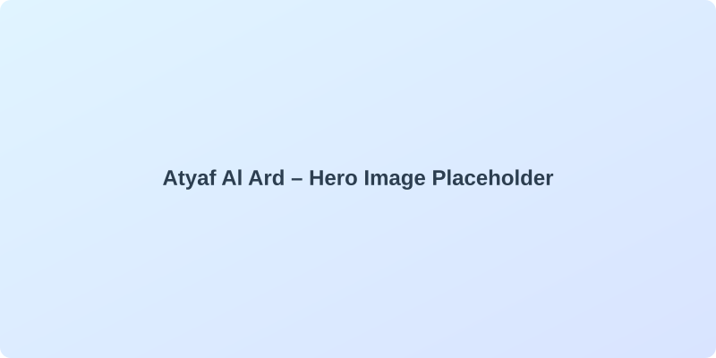

Atyaf Al Ard
A long-term research and storytelling project about Palestine, history, and the role of AI in carrying memory forward.

Research
Explorations that trace lineages, geographies, and community knowledge shaping the project.
Media
Films, audio, and visual experiments that translate research into lived stories and experiences.
Support
Pathways for allies and partners to help sustain production, research, and the youth team.
Updates
Milestones, notes from the field, and reflections on the work in progress.